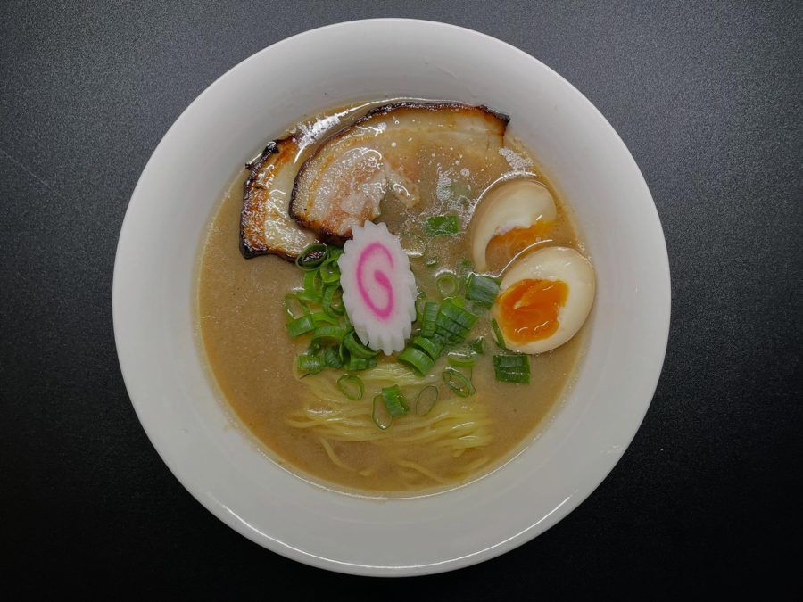
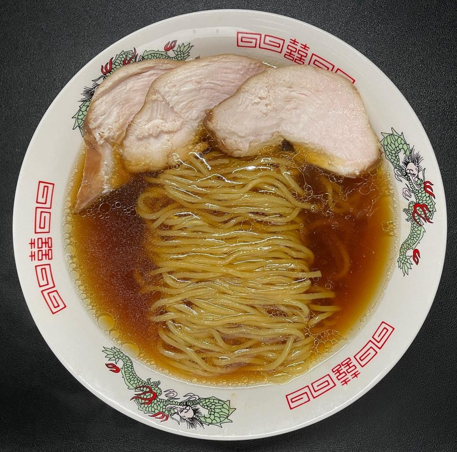
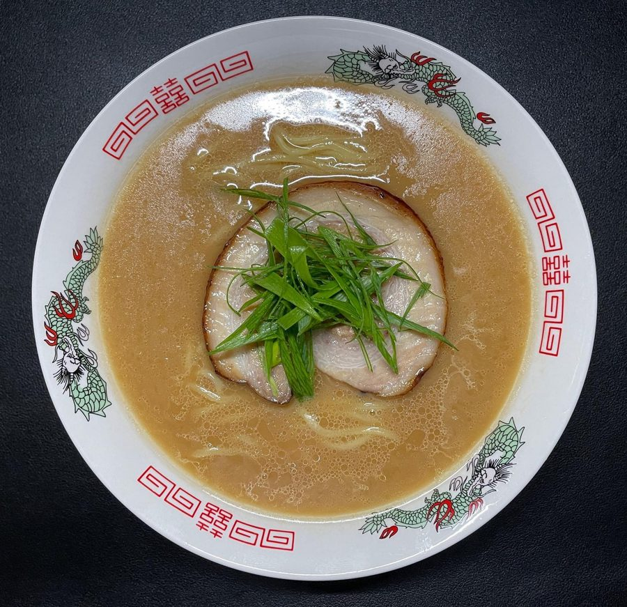
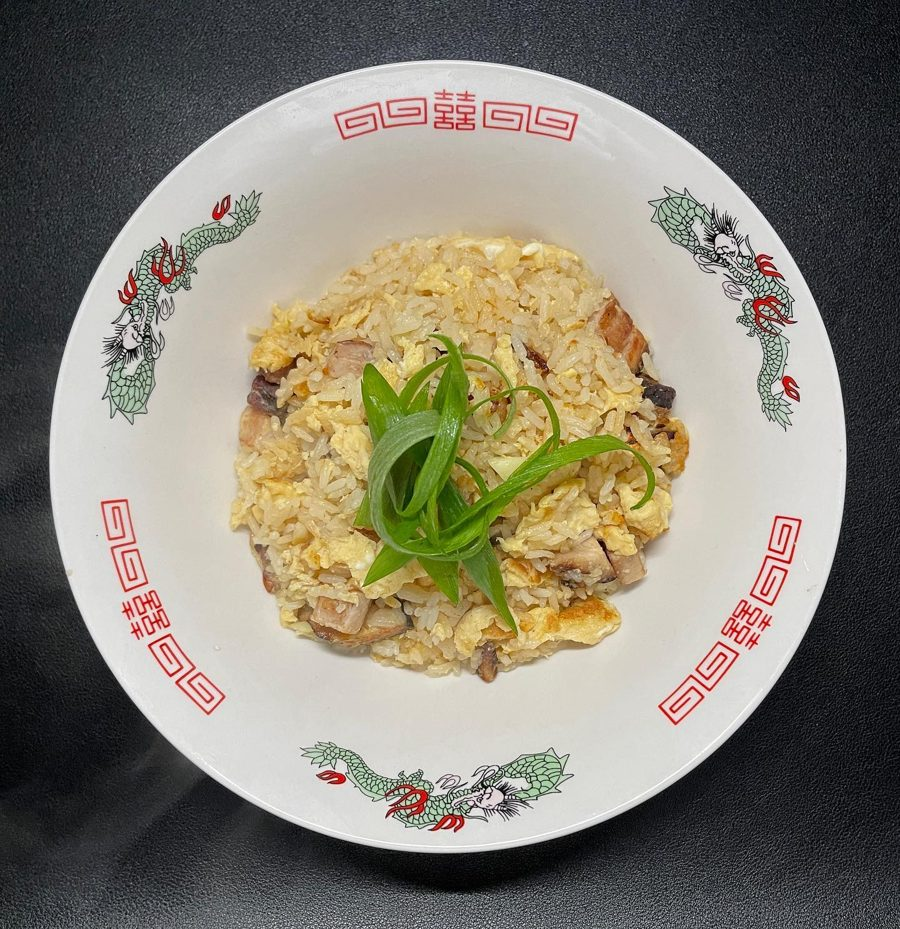
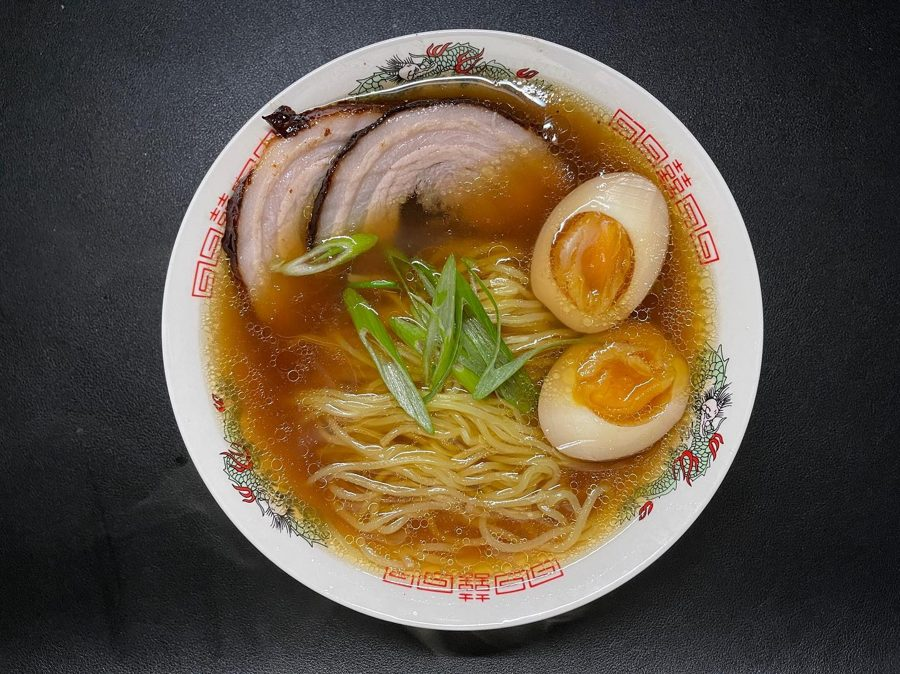
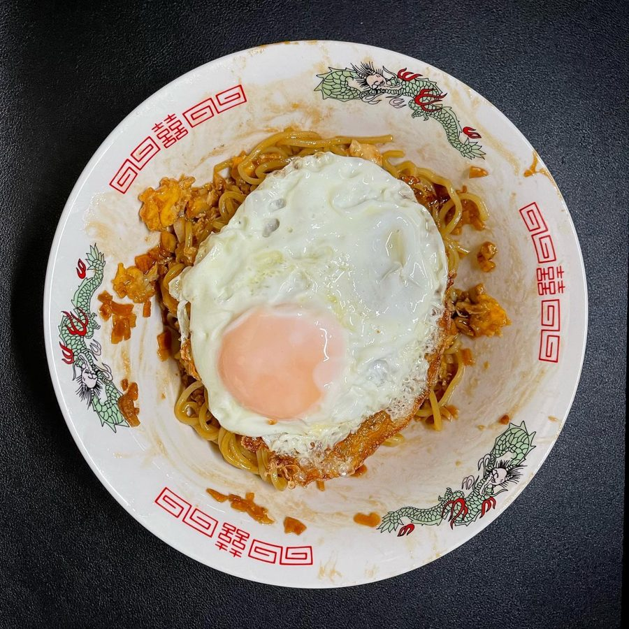
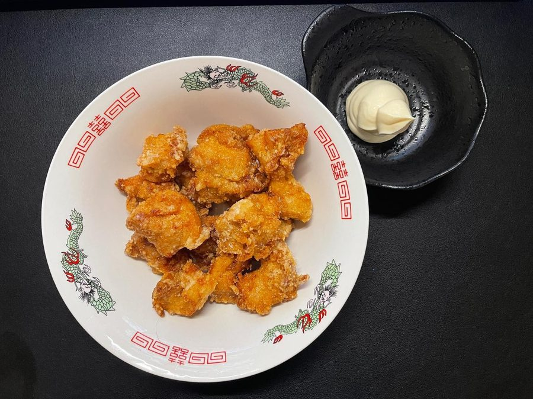
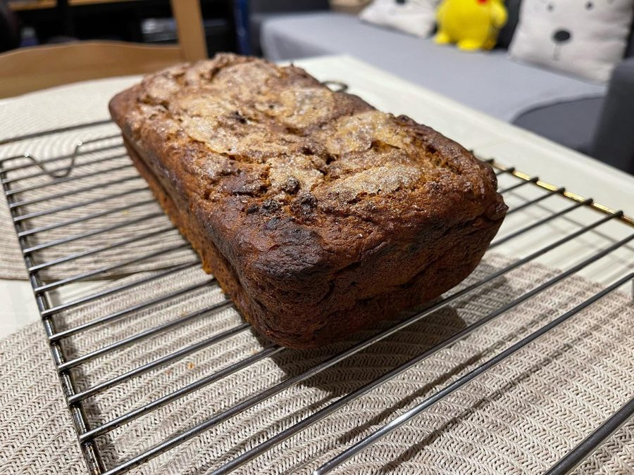
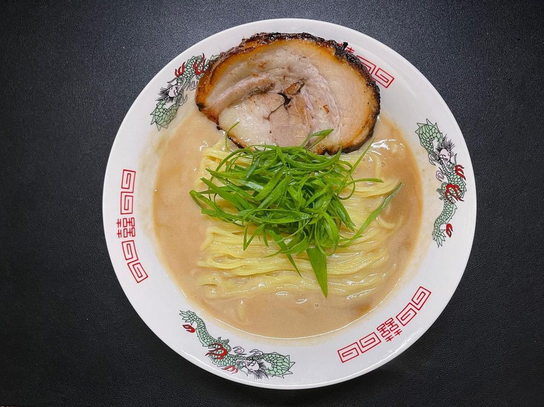

Destiny vs Dynasty: The 2025-26 ABL Championship Preview
Season-defining preview of the ABL Championship Series, weighing a first title against a repeat dynasty through matchup analysis and advanced statistics.
Championship preview
Growing up, my dad told me I had too many hobbies. I have seemed to have taken that as a challenge.
Some of those interests have turned into work. Boxing led me to DEF Promotions in Hong Kong, where I wrote, produced videos and worked on live broadcasts. Baseball led me to the Australian Baseball League, where I get to write, work with social media and analytics, build statistics tools, and find stories hidden inside the numbers. It may only be a side job, but it lets me fulfil a small part of 13-year-old me’s dream of working in professional sport.
Others have become projects of my own: Chiu.Able, where I share what I learn about cooking; CLAIRITY, my investment research system; and a couple of works in progress involving golf swing analysis and supermarket price comparison.
Not every rabbit hole needs to become a project. I also spend far too much time on sports, motorsport, GeoGuessr, advanced statistics, Excel macros, knife sharpening, and the science of strength training to minimise time in the gym.
The subjects are different, but the pattern is usually the same. I get curious, learn as much as I can, test ideas, try to turn what I've learned into something useful, and then confuse my mum for having yet another hobby. I don’t have much interest in gatekeeping what I learn either. What's the fun in learning something if you can't showoff, I mean, share, with others.
Except my cookie recipe. That's either going to my future children or to my grave. Not even my wife knows it!
That curiosity may be part of my personality, but I’ve also been lucky to have people throughout my life who have encouraged it. Family, teachers, friends, colleagues, and loved ones that have all been victims of my information dumping without judgment, and even encouraged me to keep digging and diving into rabbit holes.
This is where all those rabbit holes end up. And we're only just getting started.
"We gave our new reporter Irvin Chiu a difficult task: Tell us who the best five Australian baseball players are in the ABL right now. [...] Irvin is a great writer, loves his baseball, and has a particularly keen eye for stats and analytics."
"The @ABL starts on Friday and Irvin Chiu broke down the top 5 Aussie players who are on rosters this year: theabl.com.au/news/top-5-aussies"
Written for the Australian Baseball League, built for casual readers and dedicated followers of the sport alike.
Season-defining preview of the ABL Championship Series, weighing a first title against a repeat dynasty through matchup analysis and advanced statistics.
The case for the Aces, built from matchup data. Picked up by the postseason broadcast two days later, which worked through the argument on air.
Published the same month Imanaga signed with the Chicago Cubs, tracing his Australian stint through to the majors. Research conducted in Japanese and English.
Advanced-statistics treatment of a breakout rookie season, benchmarked against historical ABL performance.
League-wide study of run production at the halfway mark, built on a custom statistics database assembled for the purpose.
Each clip is an ABL broadcast discussing analysis from an article published days earlier. The work was written so a general audience could pick it up and use it, and they did.


Published on theABL.com.au across two Australian Baseball League seasons.
Promotional video for boxing events and fighters in Hong Kong, 2015 to 2019. Produced in Final Cut Pro X.

Brand film for the promoter.

Also directed replay selection and camera angles for the live broadcast.

Event promotional spot.

Event promotional spot.

Produced with Watanabe Promotions (Japan).
5 of 37 articles on professional boxing, fighters, predictions, and fight analysis, 2017 to 2019. Each card opens with the article's own first line.
“He stalks his prey with constant, but controlled aggression, his left arm pawing at his opponent like a metronome, trapping and lulling them.”
““You fat b*****d!” roared throughout the arena. The British fans, as usual, were in full force. This fight was viewed as a joke.”
“As an avid boxing fan, I often get to interact with other people who are fans of the sport, whether they just casually follow the sport or follow it religiously like I do.”
“Recently, Mexican superstar Saul “Canelo” Alvarez received a six-month ban after failing two drug tests in February. That’s great right?”
“One. One minute. One combination. One nasty liver shot. One incredible fight.”
Index of all 37 boxing articles written for DEF Promotions.
I cook the way I approach most things: I want to know why something works, not just that it does. I take a lot of inspiration from Chris Young, Heston Blumenthal, J. Kenji López-Alt, ChefSteps and America’s Test Kitchen, but I still like to question the explanation. I want to understand what a technique is actually doing, why an ingredient is there, and how variables like temperature, pressure, time and texture change the result.
Sometimes that curiosity leads me to make a recipe far more complicated than it needs to be, simply because I want to see how far I can push an idea. Other times, I go in the completely opposite direction and try to strip a method down to the absolute minimum effort without giving up the result I actually care about. Either way, understanding the science gives me more freedom to experiment, simplify, combine techniques from different cuisines, and solve problems without relying purely on instinct.
That is how I’ve ended up with recipes and methods I have not really seen elsewhere, usually by combining food science with ideas borrowed from different cuisines. Some of it is unconventional, and some of it is strange, but so far nobody has told me it tastes bad.
I don’t need to cook like a professional chef. I just need to be good enough to keep my wife happy.
So far, so good.
View @chiu.able on Instagram
It’s been nearly three years since I made a proper bowl of ramen. Even longer since I made a bowl of ramen for guests.
I had to stay up all night to cook this because I unfortunately have responsibilities now and couldn’t just do it the day before. But it was for two very, very, very good friends of mine, so it was worth it. 10/10 would do again.
The soup was made strictly with duck bones, minced duck meat, duck feet, and duck fat, with the first three in a ratio of 2:2:1. Still no aromatics, keeping in line of what I have been doing with previous ramen. Maximum pressure inside a pressure cooker for 45 minutes, naturally depressurising, and then keeping it at a rolling boil for another hour.
Typically you hear this idea that bones provide flavour. But that isn’t exactly true. Bones typically consist of calcium phosphate and a bunch of different structural proteins, usually collagen. The collagen gets converted into gelatin, giving that signature texture that coats your mouth.
But it doesn’t provide flavour. Meat provides flavour as its muscle tissues contain amino acids such as glutamic acid that provide the umami.
So why are stocks made using bones? Well, meat is expensive, and the bones are able to provide the collagen to give the soup its desired texture.
Chashu recipe remains unchanged.
30ml of tare and 20ml of my aroma oil (made with infusing duck fat with scallions, shallots, and garlic) to a heated bowl, followed by 300ml of the soup. Topped with chashu, ajitama, plenty of scallions, and a slice of narutomaki.
All I have to say is that it’s the best bowl of ramen I have made. Literally the night after hosting my friends, I made myself a bowl of ramen, and my wife, who claimed she wasn’t hungry, wanted to try a bit.
...let’s just say she didn’t just have a bit.
Until next time (hopefully not 3 years)

This was a pretty interesting bowl. I made a ramen broth using a dashi I made from rehydrating some dried shiitake mushrooms, and then simmered it for about half an hour with some minced chicken to make some kind of “pseudo-double soup”. Made a simple scallion oil with vegetable oil, used my usual shoyu tare, and made a chicken “chashu” that I cooked sous vide.
For the amount of effort that I put into making this on a Friday night, it was not too bad. I think the tare did a lot of the heavy lifting in this case. To be honest, I have no idea if having the shiitake mushroom dashi even did anything?
The one thing I did know was that the soup overall tasted pretty flat, which isn’t surprising as the lack of bones meant no collagen to melt into gelatin. It’s why Internet Food God @kenjilopezalt recommends adding gelatin to store-bought stock to give it some body. So I guess that’s what I’ll do next time if I ever happen to have a bunch of minced meat that is about to expire.

Made with duck bones and chicken feet. No aromatics as I wanted to highlight the taste of the duck. In a pressure cooker under high pressure for an hour, naturally depressurising, and then bringing it to a rolling boil for another hour, topping it up with water to maintain 2 litres of soup.
I usually use the chashu recipe from @ramen__lord, where every English-speaking person venturing into ramen learns from. However, I came across Harold McGee's "On Food and Cooking". He notes that even though many slow braises call for a "low temperature oven" at 165-175C, the temperature is high enough to bring the
contents inside the vessel to a boil.
So, I placed the rolled pork belly and all the braising liquid in a pot and set it in a cold oven, with the lid ajar. I then
set the oven to around 95C. After two hours, I raised the oven temperature to 120C to cook until the pork reached 80C.
After 3 total hours, the internal temperature of the pork was still in the mid-50s. With the clock nearing one in the morning, I regretted starting so late.
I then remembered the "double braising method", where the meat is braised twice for enhanced tenderness and flavour. I removed the pork from the braising liquid, let it cool on a rack, and then refrigerated it overnight. Upon waking, I returned the pork to the pot and the oven, this time starting at 120C. Once the braise finished, I removed the pork, let the surface dry, and then browned the pork in a 240C oven.
Anyway, 30ml of Shoyu tare and 15ml of duck fat (infused with scallions and garlic) to a heated bowl, followed by 300 ml of soup. I topped it with chashu and a generous serving of green onions. There was also some ajitama, but they were plain ugly, so just imagine them there.
Long story short, I absolutely loved it. Duck is easily my favourite meat, so the fact that the soup was not balanced and leaned heavily into the duck flavour didn't bother me. The green onions I added (the ones in the picture were just about half of the amount I actually used) helped cut through the richness of the broth. This is undoubtedly my new favourite bowl of ramen.
Now, back to chintans.

Rice pressure steamed with my New Wave Tokyo Style chintan broth. Eggs seasoned with my Shoyu tare. Chashu cubed and fried with my chiyu (chicken fat) aroma oil infused with garlic. Finishing touches with more tare instead of just plain soy sauce and garnished with scallions.
The taste? Well, it just tastes like fried rice haha.
Yeah, it absolutely does not taste like a bowl of ramen in fried rice form. Don’t get me wrong, it still tastes really good because fried rice is fried rice in the end. But, in the end, I would probably just stick with my Lee Kum Kee chicken stock powder in cooking my rice instead of using an entire cup of my precious chintan broth.
That being said, pork belly chashu is better cubed and in fried rice versus being sliced and served with a bowl of ramen. This is especially true if the ramen is a thick paitan.
Was a fun little experiment, but one I won’t do again. See y'all next time.

Okay, not exactly New-Wave style, as my tare does have kombu and shiitake mushrooms. But for the broth, just a stewing hen, a whole lot of chicken feet, and water. That’s it. No dashi to make it a double soup, and no aromatics either.
A regressive type of ramen that’s much simpler but still incredible.

This is one of the simplest dishes I have ever made, and it slaps. Recipe is taken from @ramen_rotas, my favourite ramen YouTube channel.
The taste resembles that of Indomie’s mi goreng without the chilli packet and a lot less saltier. Two eggs, one fried and chopped into pieces and another on top. Minced garlic fried in oil. And if you want some spice to it, add some chilli flakes on top.
Really quick, relatively cheap, depending on where you live, and really tasty. Here in Melbourne, the biggest cost for us is the ramen noodles. But if you use a thin spaghetti and cook it in baking soda to mimic the bite of ramen noodles, you can easily bring the cost down to under AUD$2. Of course it’s not as cheap nor as quick as Indomie, but I haven’t had Indomie in years but I’ve eaten this dish twice in three days now. My brain is still trying to comprehend how such an easy dish ends up tasting this good.

In my opinion, karaage and Taiwanese fried chicken are tied for the best fried chicken. They don’t require a long marinade/brine, they aren’t heavily doused in sauce or batter, and it goes perfectly with rice.

Is banana bread a bread? Or it a cake pretending to be a bread to give the impression that its healthier than it actually is? Anyways, it’s a pretty easy dish to make that is hard to genuinely mess up.
But of course, because I’m like that, I take the beauty in banana bread’s simplicity and just chuck it out the window, asking myself, “How can I put more banana into a banana bread?”
America’s Test Kitchen’s method utilises 6 large bananas, 5 of which are microwaved for 5 minutes and the resulting liquid is reduced by half to increased the density of the banana juice. Hmm, okay, seems promising, but I can’t use their recipe…mainly because it’s behind a paywall.
Then I thought, if bananas’ macronutrients are mostly carbohydrates, of which half of it is sugar and about 10 per cent fibre, then there probably is some kind of banana syrup and banana flour. And there was! Green banana flour, which I could buy from Woolies, is apparently a good source of resistant starches, and when starch gelatinises, the starch granules swell and absorb water, meaning less moisture loss due to heat. I also learned that I could make a simple banana syrup from the banana peels.
So, I replaced around 25% of plain flour with banana flour and replaced all of the sugar with the banana syrup, lowering the sugar added by around 50 percent as about half of the syrup is water. Sugar is hygroscopic, meaning it likes to hold onto water, so reducing sugar tends to result in drier food. But because bananas and banana flour are hygroscopic, I wasn’t too concerned about drying out the banana bread.
Now, does this “triple” banana bread actually make a banana bread taste more banana-y?
…Nope. At least, I couldn’t tell. Haha. But if I got a person who doesn’t really like banana bread to really like this banana bread? I guess that means it’s a good recipe?
Cacio e Pepe is my go-to pasta dish because it’s so convenient without prep work, but I’ve often had trouble with the cheese clumping. Even with J. Kenji Lopez Alt, or any cooking channel’s methods, I would always be a bit too zealous with the heat and turn the cheese into a clump with the texture of blu tack. Little did I know that the easiest method also had the least cleanup with the help of a…
Microwave.
One less pan and utensil to clean as I prepare the sauce in the bowl, and I also get to preheat my bowl in the process.
Bless my former neighbour 3 years ago for getting rid of such an expensive Breville microwave.
I will stand by my belief that my cookies best at least 99% of all other cookie recipes. This will be a cookie recipe that I will never share with anyone except my fiancee and our future children.
To say that I have obsessed over making the ultimate massive cookie is an understatement. From June 2021 to January 2023, I have made 21 batches of these 185g (6.5 oz) cookies. That’s 6 regular sized cookies in a single cookie! Each batch makes 12 cookies, so in regular cookie terms I have made nearly 1600 cookies 😅
Swipe to see it compared to a Myki card, my wallet, and how I struggled to put it in a Pyrex round container.

Adding the demi glacé to the ramen was awesome. Even though it was under salted since I didn't add enough tare, it just had so much umami I couldn't really believe it. Part of me is thinking my mind is playing tricks on me and some placebo effect is taking place here, but I hope it's not the case. The colour was a little bit lighter than Tenkaippin's, but that might be because I used a light shoyu for my tare. Tenkappin also had a massive layer of oil on top, and I didn't want to make an aroma oil because it's already so heavy.
CLAIRITY is a daily investment research system I built to make sense of what is happening in markets and, more importantly, what might happen next. It reads the day’s news through human behaviour, data and the broader economy, then traces the first-, second- and third-order effects through industries and individual companies.
Rather than treating each day in isolation, CLAIRITY keeps running theses, tracks the evidence for and against them, connects upcoming events to the ideas they could change, and measures its own investment ideas against the S&P 500. It also brings together live market, economic, company and regulatory data from sources including Twelve Data, FRED, Finnhub and SEC EDGAR.
The part I find most useful is that it is designed to learn alongside me. Each week, it consolidates what has happened, revisits its thinking and turns those lessons into something I can learn from too. That same process feeds into deeper industry research, including areas such as AI and cybersecurity.
It is ultimately a research and learning project: a way for me to test ideas, sharpen how I think about markets, and build a more disciplined investment process.
My dad and I both want better golf swings. The problem is that we’re also both too stiff to properly follow half the advice from golf coaches, PGA professionals and conventional wisdom. We simply aren’t built for some of it.
So I’m building something that works with the golfers we actually are. It uses AI to analyse swing videos alongside things like mobility, flexibility and strength, then suggests adjustments, drills and simple swing thoughts that make sense for the individual rather than an idealised golf swing. With each new video and our feedback, it can keep learning what actually works for us.
Our goals are slightly different. My dad wants to break 100 again. I mostly want to launch bombs.
More than anything, though, it’s a fun project for the two of us to build around something we both enjoy, and a way to share our golf journeys while hopefully getting a little less terrible along the way.
Grocery shopping is one of those things where saving a little bit of money is useful, but spending half an hour comparing prices usually isn’t.
So I’m building a tool that does the thinking for us. It checks supermarket prices, promotions and the brands we actually buy, then factors in the cost of getting to each store to work out where each item is genuinely cheapest. I can give it a shopping list and get back a customised plan of what to buy where.
The goal is simple: save a bit of money without having to think too hard about it.